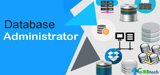
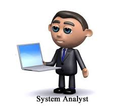
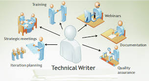

SCOPE
What Can You Do With a Computer Science Degree?
IT consultant
Working in partnership with clients, an IT consultant advises clients on the planning, design, installation and usage of information technology systems to meet the client’s business objectives, overcome problems or improve the structure and efficiency of their IT systems. As you represent a broad role in IT, your job will be similar to that of systems analysts, systems designers and applications programmers, whose roles are more specialized but nonetheless work on a consultancy basis. You may also become involved in sales and business development, identifying potential clients and maintaining good business contacts. There is fierce competition in this role, so gaining work experience in a commercial environment would help increase your prospects.
Cyber security consultant
 Depending on what computer science specializations you studied during your degree, you may wish to specialize as a cyber security consultant or an information security specialist. Maintaining cyber security in the modern world has become increasingly important, so in this role you will focus on understanding the risks to the security of information or data. You’ll analyze where security breaches may occur or have occurred, and restore or reinforce systems against such breaches, to ensure that confidential data is protected. This role could include ‘ethical hacking’, meaning deliberately attempting to hack into your employer’s network to expose any weaknesses. Alternatively you could work as a computer forensics analyst or investigatorto combat the increasing phenomenon of cyber-crime.
Depending on what computer science specializations you studied during your degree, you may wish to specialize as a cyber security consultant or an information security specialist. Maintaining cyber security in the modern world has become increasingly important, so in this role you will focus on understanding the risks to the security of information or data. You’ll analyze where security breaches may occur or have occurred, and restore or reinforce systems against such breaches, to ensure that confidential data is protected. This role could include ‘ethical hacking’, meaning deliberately attempting to hack into your employer’s network to expose any weaknesses. Alternatively you could work as a computer forensics analyst or investigatorto combat the increasing phenomenon of cyber-crime.
Information systems manager
A similar role to an IT consultant, an information systems manager is usually a full-time member of staff, responsible for the secure and effective operation of computer systems within their company. You’ll be responsible (perhaps with the help of a team of IT staff) for the entire upkeep of the ICT infrastructure within your organization, with typical tasks involving the overseeing of system installation; ensuring systems are backed-up and that the back-up systems are operating effectively; purchasing hardware and software; setting up secure access for all users, including remote users; ensuring security of data from internal and external attack; and providing IT support and advice for users.
You’ll need to make sure the ICT facilities meet the needs of your company and are current, while remaining within a set budget, and within all relevant software licensing laws. You may also need an understanding of business and management principles in order to contribute to organizational policy regarding quality standards and strategic planning in relation to IT.
Database administrator
A database administrator (DBA) is responsible for accurately and securely using, developing and maintaining the performance, integrity and security of a computerized database. The specific role is always determined by the organization in question, but is likely to mean being involved purely in database maintenance, or specialized in database development. The role is also dependent on the type of database and processes and capabilities of the database management systems (DBMS) in use in your particular organization.
Typically, this role includes ensuring data remains consistent, is clearly defined, easily accessible, is secure and can be recovered in an emergency. You’ll also be required to troubleshoot should any problems arise; liaise with programmers, operational staff, IT project managers and technical staff; provide user training, support and feedback; and write reports, documentation and operating manuals.
Multimedia programmer
A multimedia programmer is responsible for designing and creating multimedia computer products, making sure they are functional and maintaining fidelity to a designer’s specification. You’ll use creative as well as technical skills to develop multimedia features including text, sound, graphics, digital photography, 2D/3D modelling, animation and video. You’ll need to work with the designer to understand the design concept, discuss how it can be technically implemented, identify the operational rules necessary, write efficient computer code or script to make the features work, run tests of the product to test for bugs and rewrite or add new code if necessary.
You’ll also be available for technical support after the product is completed, and need to keep abreast of industry news and developments in order to suggest and implement improvements. You may work across platforms (such as the internet or mobile phones) or remain specialized in one platform. Your role may overlap with similar IT roles such as web developer, games developer, systems developer or software engineer, or you may find yourself working in tandem with these professionals to achieve mutual goals.
Systems analyst
A systems analyst uses computers and associated systems to design new IT solutions, as well as modifying and improving current systems to integrate new features or enhancements, all with the aim of improving business efficiency and productivity. This role requires a high level of technical proficiency and clear awareness of current business practices. Clients may be internal, e.g. departments within the same organization, or external, depending on your employer.
Games developer
 Games developers produce games for personal computers, games consoles, social/online games, arcade games, tablets, mobile phones and other hand held devices. This role splits into two main parts. First, there’s the creative side of designing a game and dealing with the art, animation and storyboarding. Second, there’s the programming side, using programming languages such as C++. To increase your chances of entry into games development careers, it would be helpful to have studied related aspects during your degree. It is also essential that you create a portfolio (for artistic roles) or working demo (for programming roles) with examples of work to show employers.
Games developers produce games for personal computers, games consoles, social/online games, arcade games, tablets, mobile phones and other hand held devices. This role splits into two main parts. First, there’s the creative side of designing a game and dealing with the art, animation and storyboarding. Second, there’s the programming side, using programming languages such as C++. To increase your chances of entry into games development careers, it would be helpful to have studied related aspects during your degree. It is also essential that you create a portfolio (for artistic roles) or working demo (for programming roles) with examples of work to show employers.
Technical writer
Needed in many industries, technical writers produce descriptions or instructions to help people understand how to use a product or service. The strong technical knowledge that you’ve gained during your computer science degree will be very useful in this role, particularly your knowledge of software packages, as you could be writing manuals for high-tech products. Technical writers work for an extensive assortment of industries, from finance to nuclear energy. Again, relevant experience is useful, as are strong writing skills and the ability to convey instructions clearly in the relevant language/s.
TO GO BACK click here